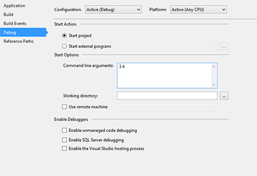
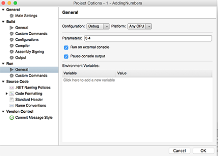

Duration
15 minutes
Prerequisites
Visual Studio 2017 requires a few F# components be installed to work with and create the F# projects used in these exercises. These components can be added by running the Visual Studio Installer found in the Windows Start menu.
If you have installed the .NET desktop development workload, you will already have the F# language support component. To create new F# projects using .NET Core, you will also need the .NET Core cross-platform development workload. To create new F# projects using the .NET Framework instead, you will need the F# desktop language support component as well.
Lab goals
The primary goal of this lab is to gain a deeper understanding of how to create modules as well as how to organize code files in an F# project. The high level goals of this activity are as follows:
- Create a new console application in your IDE.
- Create a new F# file which contains a
modulethat includes an adding function. - In Program.fs you will write the functionality to call your adding module, passing in your command line arguments, and print the result to the screen.

Steps
Create a new console application
Our goal is to create a console application, which can add two or more numbers together. In order to be successful you will need to apply what we have learned about arrays, modules and F# file structure.
- Create a new console application
- File > New > Project > Visual F# > Console Application (for a .NET Framework console app) or Console App (.NET Core) (for a .NET Core app)
- File > New > Solution > Other > .NET > Console Project (Make sure to change it to F# in the language dropdown before continuing.)
- Add a new F# source file named Adding.fs and write the code to create a module,
which has a function to add two numbers together.
- The function should be named
AddNumbersand take an array of strings. - It should convert each item in the array to an integer; can you think of an array manipulation function to do this?
- It should return the sum of all the integers, is there a built-in array function?
- The function should be named
- In Program.fs, write the functionality to call your adding module with your command line arguments and print the result to the screen.
- Remember that there is a top-down hierarchy in F#, files should be organized in order of use, not alphabetically.
You can move files up and down in the solution by right-clicking on the files and selecting Move Up or Move Down.
-
When you run project the console should open and it will be blank. To enter the parameters to add:
-
Right click on the project in the Solution Explorer and select Properties > Debug. Right click on the project in the Solution pad and select Options > Run > General.  - Add several numerical values separated by spaces and run the console application.
Note: if the command line program closes immediately before you can see the result, you can add a
Console.Readto your app.[<EntryPoint>] let main argv = if argv.Length >= 2 then printfn "%i" <| Adding.AddNumbers argv Console.Read() |> ignore 0 // return an integer exit code
-